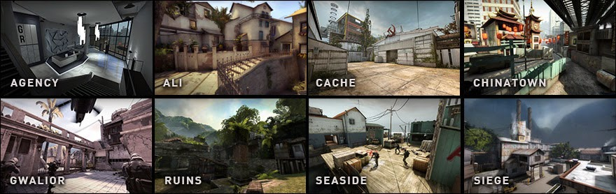

|
|
||||
|
Counter-Strike: Global Offensive (CS:GO; с англ. — «Контрудар: глобальное
наступление») — многопользовательская компьютерная игра, разработанная
компаниями Valve и Hidden Path Entertainment. Последняя
основная игра в серии игр Counter-Strike;[3] как и все игры серии, она посвящена
противостоянию террористов и подразделений специального
назначения. Выход на ПК под управлением Windows,
на компьютерах Mac и игровых приставках Xbox 360 и PlayStation 3,
состоялся 21 августа 2012 года. В 2014 году была выпущена на Linux[2], а в 2016 году — стала доступна, в
рамках программы обратной совместимости, на Xbox One.[4] В CS: GO следующие режимы
игры: Обычный режим (Classic сasual) Классический Counter-Strike - для победы нужно либо
уничтожить команду противника, либо выполнить задачу (террористам - взорвать
бомбу, спецназу - обезвредить бомбу или спасти заложника). Игра длится 15
раундов: побеждает та команда, которая первой одержит 8 побед, смена команд
местами отсутствует. Огонь по своим отключен, столкновения тоже отключены:
т.е. запрыгнуть сверху на своего тиммейта не получится, но зато никто не
будет подпирать. За убийство в обычном режиме дают в два раза меньше денег,
чем в соревновательном. Соревновательный режим (Classic
competitive) Тоже классический Counter-Strike, но с некоторыми
отличиями. В этот режим играют 5 на 5: перед началом матча система собирает
10 игроков с примерно одинаковым уровнем игры. Игру в соревновательном режиме
нельзя покидать до её окончания, иначе система выдаст бан (от 1 часа до
нескольких недель). Огонь по своим и столкновения включены. Игра длится до
тех пор, пока одна из команд не наберет в свой актив 16 побед. После 15-го
раунда команды меняются местами (деньги сбрасываются, оружие исчезает). Именно
в этом режиме можно улучшить свое звание (подробнее о нем читайте в статье
про звания в CS:GO). Гонка вооружений (Arms race) Этот режим игры CS:GO также известен как "ган
гейм" (gun game). Цель режима - первым совершить убийство из каждого
вида оружия. Чтобы получить новое оружие, нужно убить лидера вражеской
команды или двух обычных противников. Лидер - это игрок, который находится на
первом месте в своей команде. При стрельбе лидер начинает светиться и его
видно через стены и другие объекты. Последнее оружие, из которого нужно
совершить только одно убийство - это всегда нож. В этом режиме огонь по своим
и столкновения отключены, возрождение после смерти происходит моментально. Уничтожение объекта (Demolition) Игра 5 на 5, цель - уничтожить команду противника,
взорвать (террористам) или обезвредить (спецназу) бомбу. Оружие выдается
автоматически: если в текущем раунде ты убил противника - в следующем
получишь новое оружие, если убил двух и более - получишь еще и гранату.
Столкновения и огонь по своим отключены. Игра длится 20 раундов, после первых
10 команды меняются местами. Чтобы победить - нужно выиграть 11 раундов,
возможна ничья (если обе команды возьмут по 10 раундов). Бой насмерть (Deathmatch) Матч в данном режиме игры CS:GO длится 10 минут,
цель - набрать как можно больше очков. Очки даются за убийство или помощь в
убийстве противника. Также 1 очко дают за убийство курочки. Каждое оружие
дает определенное количество очков (больше всего очков дают за убийство
ножом). Можно купить любое оружие, кроме гранат. Возрождение после смерти
происходит моментально в случайном месте на карте. Раз в несколько минут одно
оружие становится бонусным - за убийство из него дают больше очков. Огонь по
своим и столкновения отключены. Популярные
карты CS: GO  |
||||